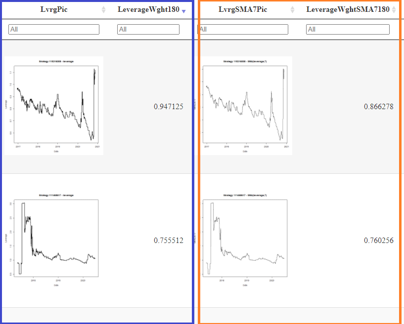

Your Excel represents something different. Either you want something else than before or you made some errors in your Excel.
Calculations you made in the first several columns on the left, can be found after the column "SMA calcs ->" on the right side in my Excel file.
I am using a shortcut "SMA" (Simple Moving Average) in such columns.
So it seems you are concentrated just to the "averaged leverage data" and not interested in the "plain leverage" algorithm. Correct?
I am talking about these results:

In your Excel: Columns E,F,G and H are not used in calculation after the column "I - Now calculating Bob/Carlton SD method". It looks like an error, because it means you are not using Leverage data from the column C anywhere after the column I.
Column J: You are using SD of daily returns (SD of the column "D Return-Raw").
I used SD of SMA(Levergae,7) instead. [You have that average in the column E in the formula =IF(C9<>0,D9/AVERAGE(C3:C9),0))]
Let me know which is correct. If SD of daily returns or SD of SMA(Leverage,7)
You have an error in column N ("180 Day Ret - SD"). It uses the column "L" in the formula: =L184/L4-1.
It should use column M.
I changed that in the Excel I am returning to you. I added a new column "O" with the formuls =M231/M52-1
However, there is a substantial change there too. When I calculated rolling 180, 210, 240 and 270 days data, I used AVERAGE of the 180,...,270 days.
For example: =AVERAGE(I31:I210)
But you are using "Rate-of-Change" (just like for daily returns). For example: =L231/L52-1
So I need to know what you want. Either awerage or "Rate-of-Change".
Carlton, I changed my software and I do have a version which calculates the same results as in your Excel. I added those results to the column "P".
But I want to ask you to verify it is worth to run (about 3 hours) and generate a final HTML pages (which would need some other changes in this version of my software.)
Your original Excel with the new colum "O" and with my results.
Thank you.